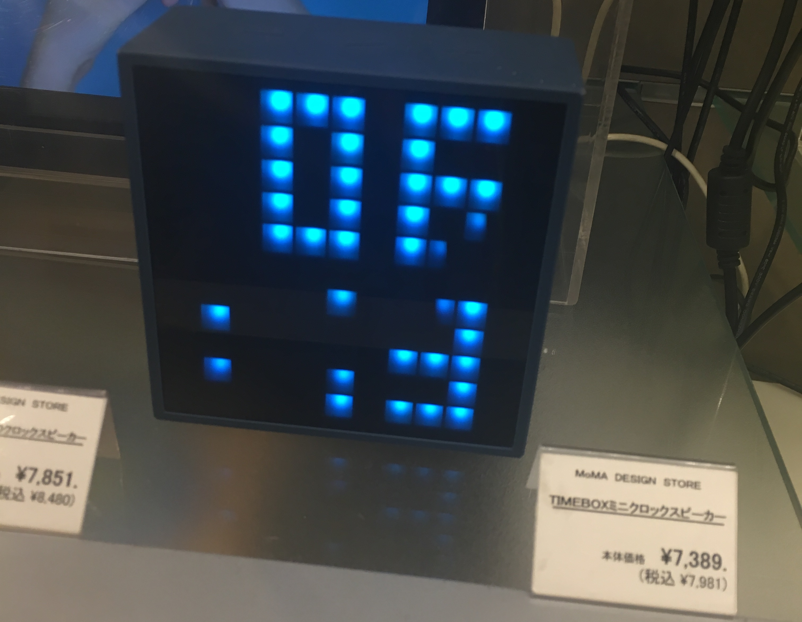

LED Matrix
The summer of 2019 I taught myself about electrical engineering by creating an LED matrix from basic components. One of the main motivations for this project was to create something functional starting with a set of basic pieces, as a way to learn about more complicated parts of EE gradually and naturally. I ended up creating an 11 by 11 grid of LEDs, controlled by an Arduino micro and two SIPO shift registers. The main challenge to being able to control the grid of LEDs was the limited number of outputs of the microcontroller I had. I was able to get around this issue by using the SIPO shift registers to load data about which LEDs should be on sequentially into the registers and then output it to the LED matrix all at once, which allowed many LEDs to be controlled by a single pin. I used this trick in conjunction with multiplexing, where each row is lit in very quick succession, making it appear as if all the LEDs are lit when in actuality only a single row is lit at a time. This allowed the entire matrix of 121 LEDs to be controlled from just 14 pins of the Arduino.

The original inspiration behind this project was to create a clock from a low-resolution LED matrix, which I had been inspired to make after seeing something similar at a store.
The inspiration behind this project, which I saw at the MoMA design store in Tokyo during a trip to Japan.
In order to use the matrix as a clock display, I worked on some code to connect to Wi-Fi using the Arduino I already had and an additional ESP8266 module. This required writing code in the Arduino programming language that sends raw AT commands over Serial to the Wi-Fi Module. It was quite fun to learn the basics of Wi-Fi from this endeavor, but it proved a whole lot harder than using a microcontroller with built in Wi-Fi, which I'd probably use in the future. The schematic diagram below shows the whole controller for the LED matrix, including the Wi-Fi module.